emplace用法
emplace 是 C++ 中用于容器（如 std::vector, std::map, std::unordered_map 等）的一种方法，允许你在容器中直接构造元素，而不需要先构造再复制或移动。这通常可以提高性能，减少不必要的对象拷贝。
与
insert类似
使用 emplace 的主要特点：
- 直接在容器中构造：
emplace会接受构造元素所需的所有参数，并在容器的内部直接创建该对象。 - 避免多次拷贝：与
push_back或insert不同，emplace不会执行隐式拷贝构造，这样可以避免额外的开销。
示例：
以下是一个使用 std::vector 和 std::unordered_map 的例子，说明 emplace 的使用：
使用 std::vector
#include <iostream>
#include <vector>
class Point {
public:
int x, y;
Point(int x, int y) : x(x), y(y) {}
};
int main() {
std::vector<Point> points;
// 使用 emplace 方法直接构造 Point 对象
points.emplace_back(1, 2);
points.emplace_back(3, 4);
for (const auto& point : points) {
std::cout << "Point(" << point.x << ", " << point.y << ")" << std::endl;
}
return 0;
}
使用 std::unordered_map
#include <iostream>
#include <unordered_map>
#include <string>
int main() {
std::unordered_map<std::string, int> map;
// 使用 emplace 插入键值对
map.emplace("apple", 10);
map.emplace("banana", 20);
for (const auto& pair : map) {
std::cout << pair.first << ": " << pair.second << std::endl;
}
return 0;
}
总结：
emplace方法是通过 完美转发 构造元素，可以显著提升性能。- 它适用于任何需要插入或添加元素的 STL 容器。
min_element 查找最小元素函数
std::min_element 是 C++ 标准库 <algorithm> 中的一个非常有用的算法函数，它用于在指定范围内查找最小元素。下面我会详细解释 min_element 的用法，以及使用解引用操作符 * 的相关内容。
1. std::min_element
函数原型
template<class ForwardIt>
ForwardIt min_element(ForwardIt first, ForwardIt last);
- 参数：
first: 指向范围开始的迭代器（包含）。last: 指向范围结束的迭代器（不包含）。
- 返回值：返回指向容器内最小元素的迭代器。如果范围为空，则返回
last。
用法步骤
- 包含必要的头文件：
使用
min_element之前，确保包含<algorithm>头文件。 - 指定范围：
使用容器的
begin()和end()方法来指定需要查找最小元素的范围。 - 获取最小值：
使用解引用操作符
*获取迭代器指向的值。
2. 示例代码
以下是一个简单的示例，使用 std::min_element 查找 std::vector 中的最小值：
#include <iostream>
#include <vector>
#include <algorithm>
int main() {
std::vector<int> numbers = {3, 1, 4, 1, 5, 9, 2, 6};
// 使用 min_element 查找最小元素
auto minIt = std::min_element(numbers.begin(), numbers.end());
if (minIt != numbers.end()) {
// 使用解引用获取最小值
int minValue = *minIt;
std::cout << "Minimum value: " << minValue << std::endl;
} else {
std::cout << "The range is empty." << std::endl;
}
return 0;
}
3. 代码解析
-
导入库：导入了
iostream,vector, 和algorithm。 -
定义容器：创建了一个
std::vector并初始化了一些整数。 -
调用
min_element：
- 使用
std::min_element来查找最小元素，范围是从numbers.begin()到numbers.end()。 - 返回的
minIt是指向最小元素的迭代器。
- 使用
-
解引用
：
- 通过
*minIt获取指向的最小值，并存储到minValue中。
- 通过
-
输出结果：如果容器非空，则输出最小值。
4. 注意事项
- 空范围：如果传递空范围给
min_element（即first和last相等），则返回last。 - 元素类型：
min_element可以处理不同的类型，包括自定义类型，只要提供相应的比较运算符。 - 性能：
min_element的时间复杂度是 O(n)，适合较小的数据集。
单引号和双引号的区别
在 C++ 中，单引号
' '用于表示字符字面值（character literals），而双引号" "用于表示字符串字面值（string literals）。字符字面值只能包含一个字符，例如'a'或'0'，而字符串字面值可以包含多个字符，例如"Hello"。
字符字面值只能包含一个字符，例如：
char singleChar = 'a'; // 单个字符
char digit = '0'; // 数字字符
字符串字面值可以包含多个字符，例如：
const char* greeting = "Hello"; // 一个字符串
const char* message = "12345"; // 字符串中的数字
指针就是数组
把指针想象成数组
int yy = 1;
int * xx = & yy; // yy地址: 123
xx ---> 两个内容
|
|--->下标 xx 存的值为 0x123
|--->数值 *xx 取值为 1 即 yy的值
xx:
val | 1 | ==> *xx
index |0x123| ==> xx
string进行模拟栈的用法
在 C++ 中，std::string 本身不是一个栈（stack），但可以像栈一样使用，特别是利用其尾部（末尾）操作。你可以使用 push_back 和 pop_back 方法来模拟栈的行为。以下是如何用 std::string 模拟栈的简单示例：
#include <iostream>
#include <string>
using namespace std;
int main() {
string stack;
// 入栈
stack.push_back('A');
stack.push_back('B');
stack.push_back('C');
// 出栈
while (!stack.empty()) {
char top = stack.back(); // 获取栈顶元素
stack.pop_back(); // 出栈
cout << top << endl; // 打印栈顶元素
}
return 0;
}
代码解释：
- 入栈：使用
push_back方法将元素添加到字符串末尾。 - 出栈：使用
pop_back方法移除末尾元素，并使用back方法获取栈顶元素（末尾元素）。 - 检查是否为空：使用
empty方法来检查栈是否为空。
注意事项：
- 尽管你可以用
std::string来模拟栈，但对于更复杂的数据结构，建议使用标准库中的std::stack，它提供了更明确的接口和更好的语义清晰性。 std::stack是一个适配器，通常与其他容器（如std::deque或std::vector）一起使用，可以更好地满足栈的需求。
queue容器
在 C++ 中，queue 是一种容器适配器，表示一个先进先出（FIFO，First In First Out）的数据结构。下面是关于 queue 的详细解释，包括其特点、基本操作及使用场景。
1. 基本概念
- 先进先出（FIFO）：在队列中，第一个加入的元素是第一个被移除的元素。可以想象成排队买东西，先到的人先服务。
- 应用：队列广泛用于任务调度、事件驱动编程、宽度优先搜索（BFS）等场景。
2. 引入和定义
要使用 queue，需要引入 C++ STL 的 <queue> 头文件：
#include <queue>
一个基本的队列定义如下：
std::queue<int> myQueue; // 定义一个存储整数的队列
3. 常用操作
a. 入队（Push）
使用 push() 方法将元素添加到队列的尾部。
myQueue.push(10);
myQueue.push(20);
myQueue.push(30);
b. 出队（Pop）
使用 pop() 方法移除队列的头部元素（最早入队的元素）。
myQueue.pop(); // 移除队头元素（10）
c. 访问队头元素
使用 front() 方法获取队头元素，但不会移除它。
int frontElement = myQueue.front(); // 返回 20
d. 访问队尾元素
使用 back() 方法获取队尾元素，但不会移除它。
int backElement = myQueue.back(); // 返回 30
e. 检查空状态
使用 empty() 方法检查队列是否为空。
if (myQueue.empty()) {
std::cout << "队列为空" << std::endl;
}
f. 获取队列大小
使用 size() 方法获取队列中元素的数量。
std::cout << "队列大小: " << myQueue.size() << std::endl;
4. 示例代码
下面是一个完整的示例，演示如何使用 queue：
#include <iostream>
#include <queue>
int main() {
std::queue<int> myQueue;
// 入队
myQueue.push(10);
myQueue.push(20);
myQueue.push(30);
// 输出队头和队尾元素
std::cout << "队头元素: " << myQueue.front() << std::endl; // 输出 10
std::cout << "队尾元素: " << myQueue.back() << std::endl; // 输出 30
// 移除队头元素
myQueue.pop();
std::cout << "新的队头元素: " << myQueue.front() << std::endl; // 输出 20
// 检查队列大小
std::cout << "队列大小: " << myQueue.size() << std::endl; // 输出 2
return 0;
}
5. 特点
- 动态大小：队列的大小是动态的，根据元素的添加和移除而变化。
- 基于其他容器：
queue通常是基于deque（双端队列）或list实现的，因此它支持快速插入和删除操作。 - 类型安全：由于使用模板，
queue可以存储任何类型的数据，确保类型安全。
6. 应用场景
- 任务调度：在操作系统中，任务调度可以利用队列来管理待处理的任务。
- 广度优先搜索（BFS）：在图形算法中，
queue是实现 BFS 的重要工具。 - 事件处理：在图形用户界面（GUI）或游戏开发中，事件通常通过队列进行处理。
7. 总结
C++ 的 queue 提供了一种简单而高效的方法来管理数据。在需要处理顺序、维持元素顺序的场景中，queue 是一个非常有用的工具。它的基本操作简单明了，使得程序员能够快速实现和使用这一数据结构。
**C++**基础
编译
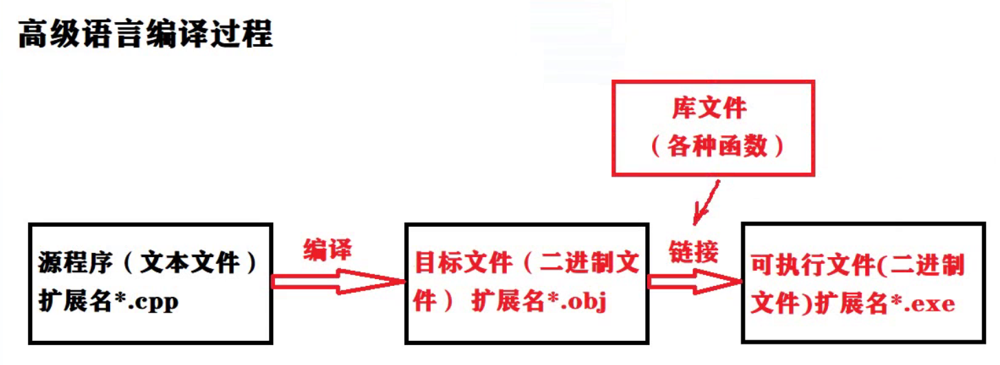
内联函数
内联函数（inline function）是 C++ 中的一种特殊函数，通过在函数调用处直接插入其代码来提高程序的执行效率。内联函数的主要优点是减少函数调用的开销。
特点：
-
定义方式： 使用
inline关键字定义内联函数：inline int add(int a, int b) { return a + b; } -
调用开销减少： 由于编译器在每个调用点替换函数体，避免了栈操作和跳转，增强了性能。
-
适合小函数： 内联函数通常适用于简单、短小的函数，过大的函数可能导致代码膨胀。
-
编译期决策： 编译器可以选择是否将某个函数作为内联函数处理，并不总是强制内联。
示例：
#include <iostream>
inline int square(int x) {
return x * x;
}
int main() {
std::cout << "Square of 5: " << square(5) << std::endl;
return 0;
}
在上述示例中，调用 square(5) 时，编译器会在调用处替换为 5 * 5，从而减少函数调用的开销。
指针

类与对象
类（Class）
类是一个用户定义的数据类型，用于封装数据和函数。类可以包含属性（成员变量）和行为（成员函数）。
定义示例：
class Dog {
public:
// 属性
std::string name;
int age;
// 构造函数
Dog(std::string n, int a) : name(n), age(a) {}
// 方法
void bark() {
std::cout << name << " says woof!" << std::endl;
}
};
对象（Object）
对象是类的实例，通过类的构造函数创建。每个对象都有自己的属性值。
使用示例：
#include <iostream>
#include <string>
class Dog {
public:
std::string name;
int age;
Dog(std::string n, int a) : name(n), age(a) {}
void bark() {
std::cout << name << " says woof!" << std::endl;
}
};
int main() {
// 创建对象
Dog myDog("Buddy", 3);
// 调用对象的方法
myDog.bark(); // 输出: Buddy says woof!
return 0;
}
总结
- 类是模板，用于定义对象的属性和行为。
- 对象是类的实例，具有具体的状态和行为。类和对象的结合使得 C++ 支持面向对象编程，便于代码的组织、复用和维护。
注意

构造函数
.png)

析构函数特点


拷贝构造函数
拷贝构造函数，又称复制构造函数，是一种特殊的构造函数，它由编译器调用来完成一些基于同一类的其他对象的构建及初始化。
其形参必须是引用，但并不限制为const，一般普遍的会加上const限制。此函数经常用在函数调用时用户定义类型的值传递及返回。
拷贝构造函数要调用基类的拷贝构造函数和成员函数。如果可以的话，它将用常量方式调用，另外，也可以用非常量方式调用。

友元函数
定义:
- 友元是一种定义在类外部的普通函数或类，但它需要在类体内进行说明，为了与该类的成员函数加以区别，在说明时前面加以关键字friend。
- 友元不是成员函数，但是它可以访问类中的私有成员。
- 类具有封装和信息隐藏的特性。只有类的成员函数才能访问类的私有成员，程序中的其他函数是无法访问私有成员的。非成员函数可以访问类中的公有成员，但是如果将数据成员都定义为公有的，这又破坏了隐藏的特性。另外，应该看到在某些情况下，特别是在对某些成员函数多次调用时，由于参数传递，类型检查和安全性检查等都需要时间开销，而影响程序的运行效率。
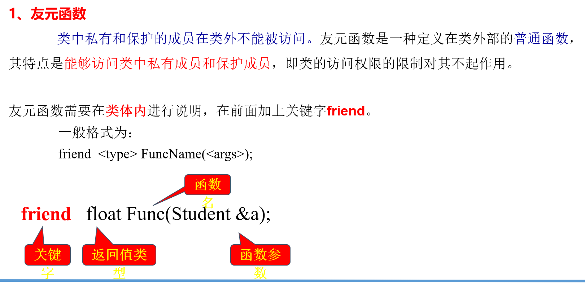
友元函数与一般函数的不同点在于：
-
友元函数必须在类的定义中说明，其函数体可在类内定义，也可在类外定义；
-
它可以访问该类中的所有成员（公有的、私有的和保护的），而一般函数只能访问类中的公有成员。
注意事项
- 友元关系不能被继承。
- 友元关系是单向的，不具有交换性。若类B是类A的友元，类A不一定是类B的友元，要看在类中是否有相应的声明。
- 友元关系不具有传递性。若类B是类A的友元，类C是B的友元，类C不一定是类A的友元，同样要看类中是否有相应的申明。
动态内存
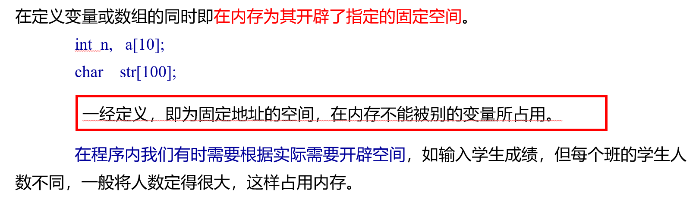
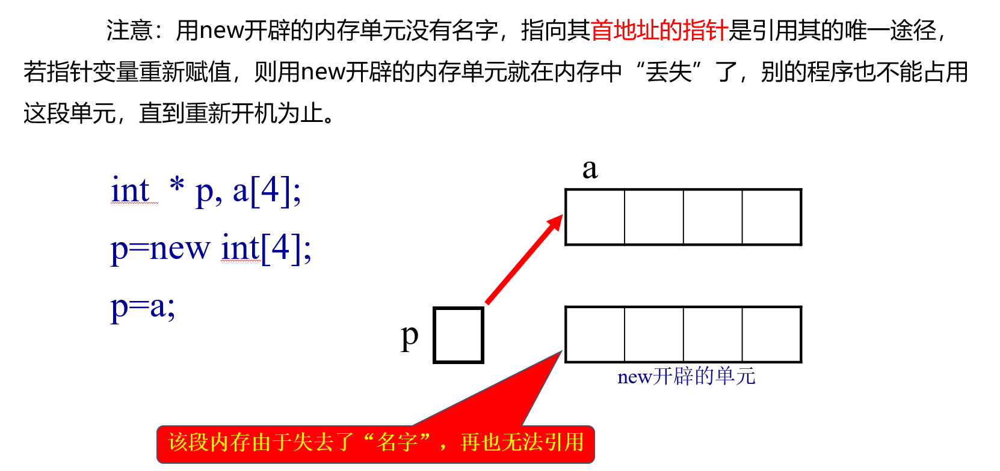
函数重载
- 函数重载是一种特殊情况，C++允许在同一作用域中声明几个类似的同名函数，这些同名函数的形参列表（参数个数，类型，顺序）必须不同，常用来处理实现功能类似数据类型不同的问题。
- 所谓函数的重载是指完成不同功能的函数可以具有相同的函数名。 C++的编译器是根据函数的实参来确定应该调用哪一个函数的。
void Swap1(int* a, int* b);
void Swap2(float* a, float* b);
void Swap3(char* a, char* b);
void Swap4(double* a, double* b);
运算符重载
可以重定义或重载大部分 C++ 内置的运算符。这样，您就能使用自定义类型的运算符。
重载的运算符是带有特殊名称的函数，函数名是由关键字 operator 和其后要重载的运算符符号构成的。与其他函数一样，重载运算符有一个返回类型和一个参数列表。
Box operator+(const Box&);
声明加法运算符用于把两个 Box 对象相加，返回最终的 Box 对象。大多数的重载运算符可被定义为普通的非成员函数或者被定义为类成员函数。如果我们定义上面的函数为类的非成员函数，那么我们需要为每次操作传递两个参数，如下所示：
Box operator+(const Box&, const Box&);
单继承
-
在C++中所谓“继承”就是在一个已存在的类的基础上建立一个新的类。已存在的类称为“基类(base class)”或“父类(father class)”。新建立的类称为“派生类(derived class)”或“子类(son class)”。
-
通过继承机制，可以利用已有的数据类型来定义新的数据类型。所定义的新的数据类型不仅拥有新定义的成员，而且还同时拥有旧的成员。我们称已存在的用来派生新类的类为基类，又称为父类。由已存在的类派生出的新类称为派生类，又称为子类。
-
在建立派生类的过程中，基类不会做任何改变，派生类则除了继承基类的所有可引用的成员变量和成员函数外，还可另外定义本身的成员变量和处理这些变量的函数，由于派生类可继承基类的成员变量和成员函数，因此在基类中定义好的数据和函数等的程序代码可重复使用，这样可以提高程序的可靠性。
当从已有的类中派生出新的类时，可以对派生类做以下几种变化：
- 可以继承基类的成员数据或成员函数。
- 可以增加新的成员变量。
- 可以增加新的成员函数。
- 可以重新定义已有的成员函数。
- 可以改变现有的成员属性。
在C++中有二种继承：单一继承和多重继承。当一个派生类仅由一个基类派生时，称为单一继承；而当一个派生类由二个或更多个基类所派生时，称为多重继承。
但派生并不是简单的扩充，有可能改变基类的性质。有三种派生方式：公有派生、保护派生、私有派生。默认的是私有派生。
公有派生（Public Inheritance）
在 C++ 中，公有派生（Public Inheritance）是最常见的类继承方式。通过公有派生，派生类可以继承基类的成员，其访问权限如下：
- 公有成员（public）：
- 在派生类和类外均可访问。
- 保护成员（protected）：
- 在派生类内可访问，但在类外不能直接访问。
- 私有成员（private）：
- 不能在派生类中访问，只能通过基类的公有或保护成员函数访问。
示例代码
class Base {
public:
int pubVar; // 可在派生类和类外访问
protected:
int protVar; // 可在派生类访问，但类外无法访问
private:
int privVar; // 仅能在基类中访问
};
class Derived : public Base {
public:
void accessMembers() {
pubVar = 1; // 可访问
protVar = 2; // 可访问
// privVar = 3; // 错误：无法访问
}
};
// 使用示例
int main() {
Derived d;
d.pubVar = 10; // 可以访问
// d.protVar = 20; // 错误：无法访问
// d.privVar = 30; // 错误：无法访问
return 0;
}
- 使用公有派生时，基类的公有和保护成员在派生类中依然保持其访问权限，而私有成员不可访问。
私有派生（Private Inheritance）
在 C++ 中，私有派生是一种继承方式，其中基类的公有成员和保护成员在派生类中都变为私有成员。这意味着：
- 公有成员（public）：
- 在基类中为公有，但在派生类中变为私有。可以在派生类内部直接使用，但在派生类外部无法访问。
- 保护成员（protected）：
- 在基类中为保护，但在派生类中同样变为私有。可以在派生类内部使用，但在外部无法访问。
- 私有成员（private）：
- 私有成员在基类中始终不可访问，派生类也无法直接使用。
示例代码
class Base {
public:
int pubVar; // 公有成员
protected:
int protVar; // 保护成员
private:
int privVar; // 私有成员
};
class Derived : private Base {
public:
void accessMembers() {
pubVar = 1; // 可以访问（变为私有）
protVar = 2; // 可以访问（变为私有）
// privVar = 3; // 错误：无法访问
}
};
// 使用示例
int main() {
Derived d;
d.pubVar = 10; // 错误：无法访问
// d.protVar = 20; // 错误：无法访问
// d.privVar = 30; // 错误：无法访问
return 0;
}
- 私有派生通过将基类的公有和保护成员转为私有，增强了基类的封装性，确保只有派生类内部可以使用这些成员，外部无法直接访问。这种方式适用于希望隐藏基类实现细节，同时允许派生类使用基类功能的场景。
3**、【保护派生】**
class ClassName: protected BaseClassName
保护派生时，基类中公有成员和保护成员在派生类中均变为保护的和私有的，在派生类中仍可直接使用这些成员，基类中的私有成员，在派生类中不可直接使用。
基类：public: (变为保护)在派生类中使用，类外不可使用
protected: (变为私有）在派生类中使用，类外不可使用
private: 不能在派生类中和类外使用
保护派生（Protected Inheritance）
在 C++ 中，保护派生是一种继承方式。通过这种方式，基类的公有成员和保护成员在派生类中被视为保护成员，这意味着它们的访问权限发生了变化：
- 公有成员（public）：
- 在基类中是公有的，但在保护派生中变为保护的。派生类可以内部访问，但类外部无法访问。
- 保护成员（protected）：
- 在基类中是保护的，经过保护派生后仍然是保护的，派生类可以内部访问，类外部无法访问。
- 私有成员（private）：
- 无论是公有、保护还是私有继承，基类的私有成员始终不可在派生类中访问。
示例代码
class Base {
public:
int pubVar; // 公有成员
protected:
int protVar; // 保护成员
private:
int privVar; // 私有成员
};
class Derived : protected Base {
public:
void accessMembers() {
pubVar = 1; // 可以访问（变为保护）
protVar = 2; // 可以访问（仍为保护）
// privVar = 3; // 错误：无法访问
}
};
// 使用示例
int main() {
Derived d;
// d.pubVar = 10; // 错误：无法访问
// d.protVar = 20; // 错误：无法访问
// d.privVar = 30; // 错误：无法访问
return 0;
}
- 通过保护派生，基类的公有和保护成员变为保护，派生类内部可以直接使用这些成员，但在派生类外部无法访问。这种方式适用于需要隐藏基类实现细节，仅允许派生类使用基类功能的场合。保护派生的访问控制增大了封装性，确保了基类的内聚性。
抽象类与保护的成员函数
在面向对象编程中，一个类如果只能用作基类，不能创建对象，那么这个类被称为抽象类。抽象类的主要目的是用来定义其他类的通用接口或协议，通常包含至少一个抽象方法，这些方法在抽象类中声明但不实现，派生类必须实现这些方法。
抽象类的定义示例
class AbstractClass {
public:
virtual void abstractMethod() = 0; // 抽象方法
};
保护的构造函数和析构函数
在 C++ 中，可以将类的构造函数和析构函数定义为保护的（protected）。这样，外部代码无法直接创建该类的对象，但派生类可以访问和调用这些构造函数和析构函数。这种设计通常用于控制对象的创建和销毁过程，以确保只有派生类能够实例化该类。
例如：
class AbstractBase {
protected:
AbstractBase() {} // 保护构造函数
virtual ~AbstractBase() {} // 保护析构函数
};
// 派生类可以使用
class ConcreteDerived : public AbstractBase {
public:
ConcreteDerived() {}
};
私有构造函数和析构函数
如果将一个类的构造函数或析构函数定义为私有的（private），这个类将无法被实例化，也无法被用作基类来派生出新的类。这种设计通常用于工具类等场景，表明该类不应该直接创建对象，而是提供静态功能或数据。
当把类中的构造函数或析构函数说明为私有的时，所定义的类通常是没有任何实用意义的，一般情况下，不能用它来产生对象，也不能用它来产生派生类。
例如：
class Utility {
private:
Utility() {} // 私有构造函数
~Utility() {} // 私有析构函数
public:
static void usefulMethod() {
// 提供静态方法
}
};
- 抽象类用于定义子类的接口，不能被实例化。
- 保护构造函数和析构函数允许派生类访问，控制对象创建。
- 私有构造函数和析构函数禁止实例化，通常用于工具类。
多继承
//格式为：
class 类名:<Access>类名1,..., <Access>类名n
{
private: ...... ； //私有成员说明;
public: ...... ； //公有成员说明;
protected: ...... ； //保护的成员说明;
};
class D: public A, protected B, private C
{ ....//派生类中新增加成员
};
初始化基类成员
构造函数不能被继承, 派生类的构造函数必须调用基类的构造函数来初始化基类成员基类子对象。
派生类构造函数的调用顺序如下：
- 基类的构造函数
- 子对象类的构造函数
- 派生类的构造函数
虚继承
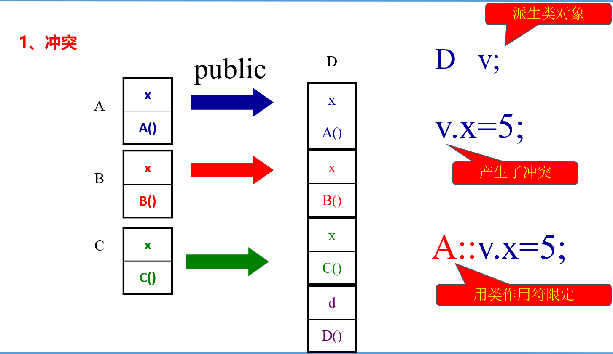
//通过指定类名来解决指定不明确问题
A::v.x = 5;
虚基类
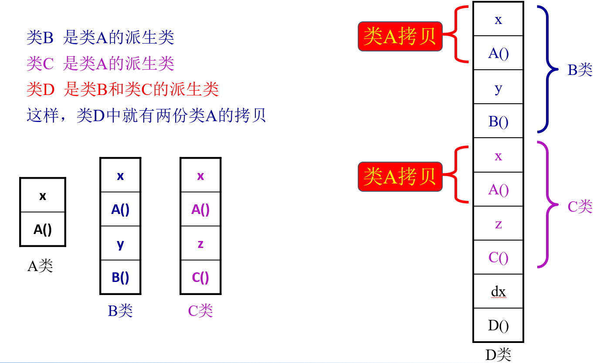
在同一个公共的基类在派生类中产生多个拷贝，不仅多占用了存储空间，而且可能会造成多个拷贝中的数据不一致和模糊的引用。
D d;
d.x=10; //模糊引用
在多重派生的过程中，若使公共基类在派生类中只有一个拷贝，则可将这种基类说明为虚基类。在派生类的定义中，只要在基类的类名前加上关键字virtual，就可以将基类说明为虚基类。
class B:public virtual A{
public:
int y;
B(int a=0, int b=0 ):A(b) { y=a;}
};
这样就不会造成模糊引用。
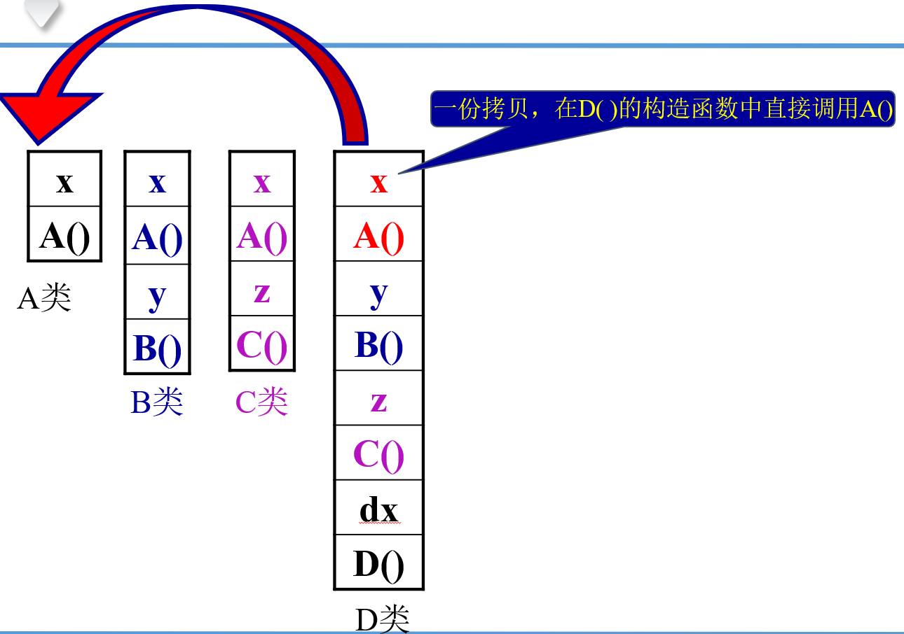
- 由虚基类派生出的对象初始化时，直接调用虚基类的构造函数。因此，若将一个类定义为虚基类，则一定有正确的构造函数可供所有派生类调用。
- 再次强调，用虚基类进行多重派生时，若虚基类没有缺省的构造函数，则在每一个派生类的构造函数中都必须有对虚基类构造函数的调用 （且首先调用）。
虚函数
虚函数是 C++ 中实现多态性的重要机制。它允许在基类中声明一个函数，并在派生类中重新定义（重写）这个函数。通过虚函数，可以在运行时根据对象的实际类型调用相应的函数，实现动态绑定。
定义和用法
虚函数通过在基类中使用关键字 virtual 声明。当基类指针或引用指向派生类对象时，虚函数确保调用的是派生类中重写的版本。
示例代码
#include <iostream>
class Base {
public:
virtual void show() { // 虚函数
std::cout << "Base class show function called." << std::endl;
}
virtual ~Base() {} // 虚析构函数
};
class Derived : public Base {
public:
void show() override { // 重写基类的虚函数
std::cout << "Derived class show function called." << std::endl;
}
};
int main() {
Base* ptr; // 基类指针
Derived derivedObj; // 派生类对象
ptr = &derivedObj; // 指向派生类对象
ptr->show(); // 调用派生类的 show 函数
return 0;
}
输出结果
Derived class show function called.
关键点
- 动态绑定：虚函数的调用决定是在运行时而非编译时，允许实现多态。
- 基类指针或引用：通过基类指针或引用调用虚函数时，实际调用的是对象的动态类型的相应函数。
- 虚析构函数：如果类有虚函数，通常应该有虚析构函数，以确保在对象销毁时正确调用派生类的析构函数。
- 性能开销：虚函数通过虚表（vtable）实现，可能会引入少许性能开销。
抽象类
抽象类是面向对象编程中的一种特殊类型的类，它主要用于定义子类的接口或协议。抽象类不能被实例化，也就是说，无法创建抽象类的对象。它通常包含至少一个抽象方法，即在抽象类中声明但不实现的方法。
特点
- 不能实例化：抽象类不能创建对象，只能作为基类使用。
- 包含抽象方法：至少包含一个纯虚函数（抽象方法），用
= 0的语法声明。 - 可包含具体方法：抽象类可以包含具体方法（已经实现的方法）和成员变量。
- 派生类实现：派生类必须实现所有抽象方法，才能被实例化。
示例代码
#include <iostream>
class AbstractClass {
public:
// 抽象方法
virtual void doSomething() = 0;
// 具体方法
void commonFunction() {
std::cout << "This is a common function." << std::endl;
}
};
class ConcreteClass : public AbstractClass {
public:
// 实现抽象方法
void doSomething() override {
std::cout << "Doing something in ConcreteClass." << std::endl;
}
};
int main() {
// AbstractClass obj; // 错误：无法实例化抽象类
ConcreteClass myObject;
myObject.commonFunction(); // 调用具体方法
myObject.doSomething(); // 调用实现的抽象方法
return 0;
}
输出结果
This is a common function.
Doing something in ConcreteClass.
关键点
- 接口定义：抽象类通过定义接口，规定了派生类应当实现的功能。
- 增强灵活性：通过使用抽象类，可以轻松实现多态，提高代码的可维护性和扩展性。
- 防止实例化：使用抽象类可以防止意外创建基类的对象，确保只能使用具体的实现类。
命名空间
**使用命名空间的目的是对标识符的名称进行本地化，以避免命名冲突。在C++中，变量、函数和类都是大量存在的。如果没有命名空间，这些变量、函数、类的名称将都存在于全局命名空间中，会导致很多冲突。 **
namespace 关键字使得我们可以通过创建作用范围来对全局命名空间进行分隔。本质上来讲，一个命名空间就定义了一个范围。定义命名空间的基本形式如下：
namespace 名称{ 声明 }
在命名空间中定义的任何东西都局限于该命名空间内。
命名空间可以嵌套，在一个命名空间中定义另一个命名空间。
namespace 命名空间名称1{
// 代码声明
namespace命名空间名称2{
// 代码声明
}
}
通过使用 :: 运算符来访问嵌套的命名空间中的成员。
函数模板
- 模板是泛型编程的基础，泛型编程即以一种独立于任何特定类型的方式编写代码。模板是创建泛型类或函数的蓝图或公式。
模板函数定义的一般形式如下所示：
template <typename type类型> 返回类型 函数名(参数列表)
{
// 函数的主体
}
type 是函数所使用的数据类型的占位符名称。这个名称可以在函数定义中使用。
- 正如我们定义函数模板一样，我们也可以定义类模板。泛型类声明的一般形式如下所示：
template <class type> class class-name {
}
type 是占位符类型名称，可以在类被实例化的时候进行指定。使用一个逗号分隔的列表来定义多个泛型数据类型。
输入输出流 IO
IO流
在C++中允许用户重载运算符<<和>>，实现对象的输入和输出。重载这二个运算符时，在对象所在的类中，将重载这二个运算符的函数说明该类的友元函数。
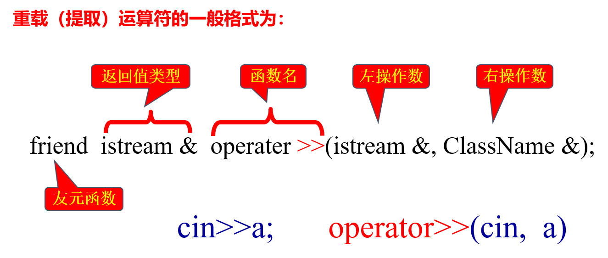
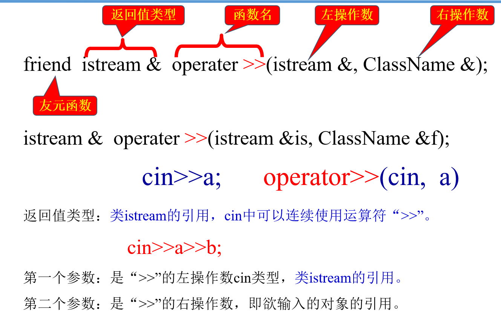
文件流
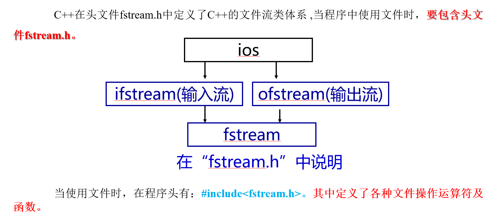
C++标准库专门提供了3个类用于实现文件操作，它们统称为文件流类，这3个类分别为：
- ifstream：专用于从文件中读取数据；
- ofstream：专用于向文件中写入数据；
- fstream：既可用于从文件中读取数据，又可用于向文件中写入数据。
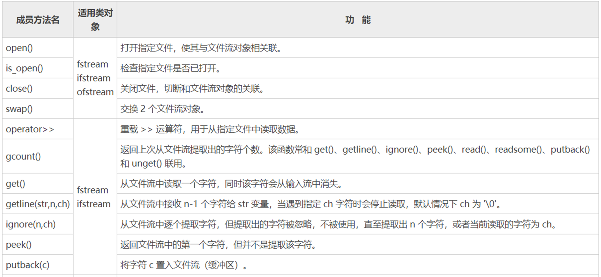
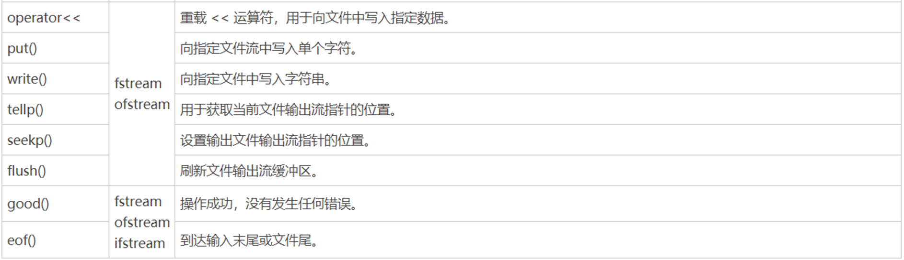
打开文件可以通过以下两种方式进行：
- 调用流对象的 open 成员函数打开文件。
- 定义文件流对象时，通过构造函数打开文件。
【使用 open 函数打开文件】
先看第一种文件打开方式。以 ifstream 类为例，该类有一个 open 成员函数，其他两个文件流类也有同样的 open 成员函数：
void open(const char* szFileName, int mode)
第一个参数是指向文件名的指针，第二个参数是文件的打开模式标记。
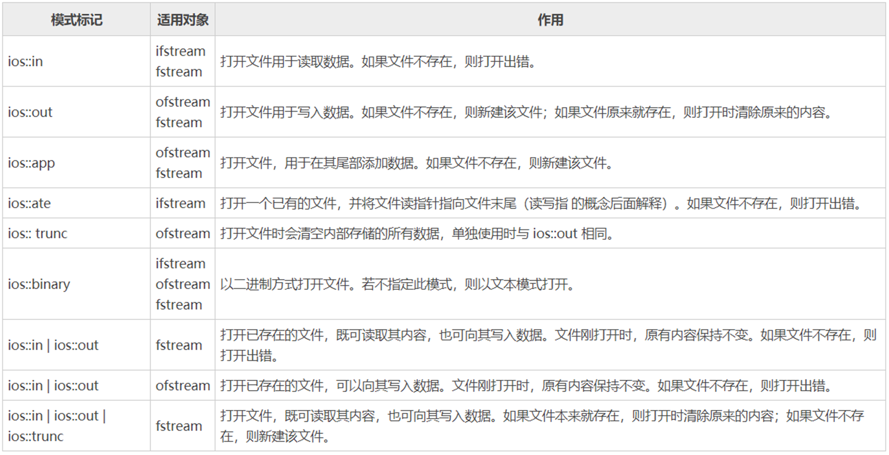
ios::binary 可以和其他模式标记组合使用，例如：
ios::in | ios::binary表示用二进制模式，以读取的方式打开文件；ios::out | ios::binary表示用二进制模式，以写入的方式打开文件。
在流对象上执行 open 成员函数，给出文件名和打开模式，就可以打开文件。判断文件打开是否成功，可以看“对象名”这个表达式的值是否为 true，如果为 true，则表示文件打开成功。
**close()方法的用法很简单，其语法格式如下： **
void close();
调用open()方法打开文件，是文件流对象和文件之间建立关联的过程。那么，调用 close()方法关闭已打开的文件，就可以理解为是切断文件流对象和文件之间的关联。注意，close()方法的功能仅是切断文件流与文件之间的关联，该文件流并会被销毁，其后续还可用于关联其它的文件。
可以看到，该方法既不需要传递任何参数，也没有返回值。
STL标准模板库
STL是Standard Template Library的简称，中文名标准模板库，惠普实验室开发的一系列软件的统称。它是由Alexander Stepanov、Meng Lee和David R Musser在惠普实验室工作时所开发出来的。从根本上说，STL是一些“容器”的集合，这些“容器”有list,vector,set,map等，STL也是算法和其他一些组件的集合。这里的“容器”和算法的集合指的是世界上很多聪明人很多年的杰作。STL的目的是标准化组件，这样就不用重新开发，可以使用现成的组件。STL是C++的一部分，因此不用安装额外的库文件。
STL的版本很多，常见的有HP STL、PJ STL、 SGI STL等。
vector 序列式容器
vector 容器是 STL 中最常用的容器之一，它和 array 容器非常类似，都可以看做是对 C++ 普通数组的“升级版”。不同之处在于，array 实现的是静态数组（容量固定的数组），而 vector 实现的是一个动态数组，即可以进行元素的插入和删除，在此过程中，vector 会动态调整所占用的内存空间，整个过程无需人工干预。
vector 常被称为向量容器，因为该容器擅长在尾部插入或删除元素，在常量时间内就可以完成，时间复杂度为O(1)；而对于在容器头部或者中部插入或删除元素，则花费时间要长一些（移动元素需要耗费时间），时间复杂度为线性阶O(n)。
deque双端队列容器
前面已接触过vector 容器，值得一提的是，deque 容器和 vecotr 容器有很多相似之处，比如：deque 容器也擅长在序列尾部添加或删除元素（时间复杂度为O(1)），而不擅长在序列中间添加或删除元素。deque 容器也可以根据需要修改自身的容量和大小。
和 vector 不同的是，deque 还擅长在序列头部添加或删除元素，所耗费的时间复杂度也为常数阶O(1)。并且更重要的一点是，deque 容器中存储元素并不能保证所有元素都存储到连续的内存空间中。
当需要向序列两端频繁的添加或删除元素时，应首选 deque 容器。
stack 栈容器
stack< T >容器适配器中的数据是以 LIFO (先进后出) 的方式组织的，这和自助餐馆中堆叠的盘子、箱子中的一堆书类似。理论上的 stack 容器及其一些基本操作。只能访问 stack 顶部的元素；只有在移除 stack 顶部的元素后，才能访问下方的元素。
queue队列
队列也是一种逻辑数据结构，其具有先进先出的特性，只能在队的前端进行删除， 在队的后端进行插入。针对这种特性，可以实现一些较为复杂的逻辑。在实际应用中，部分程序也正需要这样一种顺序进出的数据处理方式。
- queue：只允许从一端插入元素（入队），从另一端删除元素（出队）。遵循先进先出（FIFO）的原则。
- deque：可以在两端插入和删除元素。支持在前端和后端进行操作。
set容器
STL 对这个序列可以进行查找、插入、删除序列中的任意一个元素，而完成这些操作的时间同这个序列中元素个数的对数成比例关系，并且当游标指向一个已删除的元素时，删除操作无效。
而一个经过更正的和更加实际的定义应该是：一个集合(set)是一个容器，它其中所包含的元素的值是唯一的。这在收集一个数据的具体值的时候是有用的。集合中的元素按一定的顺序排列，并被作为集合中的实例。一个集合通过一个链表来组织，在插入操作和删除操作上比向量(vector)快，但查找或添加末尾的元素时会有些慢。具体实现采用了红黑树的平衡二叉树的数据结构。
map容器
映射和多重映射基于某一类型Key的键集的存在，提供对T类型的数据进行快速和高效的检索。
对map而言，键只是指存储在容器中的某一成员。Map不支持副本键，multimap支持副本键。Map和multimap对象包涵了键和各个键有关的值，键和值的数据类型是不相同的，这与set不同。set中的key和value是Key类型的，而map中的key和value是一个pair结构中的两个分量。
C++异常处理
程序中常见的错误有两大类：语法错误和运行错误。在编译时，编译系统能发现程序中的语法错误。
异常(exception)是运行时(run-time)的错误，通常是非正常条件下引起的，例如，下标(index)越界、new操作不能正常分配所需内存。C语言中，异常通常是通过被调用函数返回一个数值作为标记的。
C++中，函数可以识别标记为异常的条件，然后通告发生了异常。这种通告异常的机制称为抛出异常(throwing an exception)。
异常提供了一种转移程序控制权的方式。C++ 异常处理涉及到三个关键字：try、catch、throw。
- **throw：**当问题出现时，程序会抛出一个异常。这是通过使用 throw 关键字来完成的。
- **catch：**在您想要处理问题的地方，通过异常处理程序捕获异常。catch 关键字用于捕获异常。
- **try：**try 块中的代码标识将被激活的特定异常。它后面通常跟着一个或多个 catch 块。
如果有一个块抛出一个异常，捕获异常的方法会使用 try 和 catch 关键字。try 块中放置可能抛出异常的代码，try 块中的代码被称为保护代码。
例如
#include <iostream>
using namespace std;
int main()
{
double x, y;
cout << "请输入x,y的值:";
cin >> x >> y;
try {
if (y == 0)
throw - 1; // 抛出-1类型异常
else if(x==0)
throw - 1.0; // 抛出-1类型异常
else
cout << "x/y=" << x / y << endl << endl;
}
catch (int e)
{
cout << "catch(int) :" << e << endl;
}
catch (double d)
{
cout << "catch(double) :" << d << endl;
}
return 0;
}